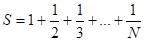
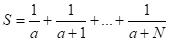
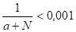
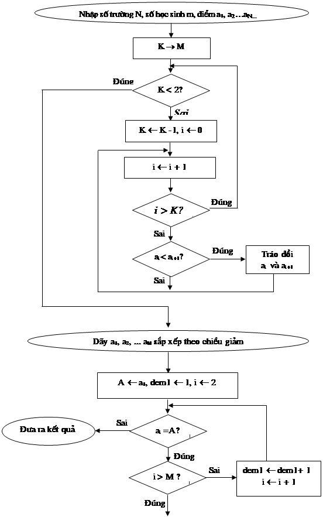
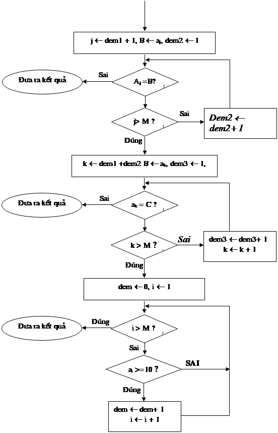

Bµi 1: (3 ®iÓm)
Tr×nh bµy thuËt gi¶i bµi to¸n sau b»ng c¸ch liÖt kª c¸c bíc vµ s¬ ®å khèi.
a) 
Víi N lµ sè nguyªn d¬ng
b) 
Cho tíi khi 
Bµi 2:(3 ®iÓm)
M« pháng thuËt to¸n b»ng c¸ch liÖt kª c¸c bíc ®Î mçi khi nhËp vµo m¸y
a) Sè díi d¹ng trong hÖ nhÞ ph©n th× m¸y viÕt sè ®ã ra díi d¹ng trong hÖ thËp ph©n.
b) Sè díi d¹ng trong hÖ thËp ph©n (Sè>0 vµ < 100) th× m¸y viÕt sè ®ã ra díi d¹ng trong hÖ nhÞ ph©n vµ d¹ng trong hÖ hec xa.
c) Sè díi d¹ng trong hÖ hec xa th× m¸y viÕt sè ®ã ra díi d¹ng trong hÖ thËp ph©n.
Bµi3:(4 ®iÓm)
K× thi ¤lympic n¨m häc 2006-2007 côm trêng Long Biªn-Gia L©m cã N trêng tham gia thi m«n Tin häc, mçi trêng cã m häc sinh dù thi. VÒ c¬ cÊu xÕp gi¶i lµ: Gi¶i nhÊt gåm nh÷ng häc sinh cã tæng ®iÓm thi cao nhÊt, gi¶i nh× gåm nh÷ng häc sinh cã tæng ®iÓm thi cao thø hai, gi¶i ba gåm nh÷ng häc sinh cã tæng ®iÓm thi cao thø ba vµ häc sinh giái bé m«n gåm nh÷ng häc sinh cã tæng ®iÓm thi lín h¬n b»ng 50% tæng sè ®iÓm cña bai thi.
M« pháng thuËt to¸n b»ng c¸ch liÖt kª c¸c bíc vµ vÏ s¬ ®å khèi gióp ban gi¸m tæ chøc Olympic viÕt ch¬ng tr×nh xÕp gi¶i thuËn lîi vµ c«ng b»ng.
Yªu cÇu ®a ra sè häc sinh ®¹t trong mçi gi¶i, sè ®iÓm thi cña mçi gi¶i cïng toµn bé sè häc sinh ®¹t danh hiÖu häc sinh giái bé m«n trong côm.
B) PHÇN TR¾C nghiÖm
C©u 1: Mïi vÞ lµ th«ng tin:
A) D¹ng sè
B) D¹ng phi sè
C) Võa lµ d¹ng sè, võa lµ d¹ng phi sè
D) Cha cã kh¶ n¨ng thu thËp lu tr÷ vµ xö lý
C©u 2: NhËn ®Þnh nµo sau ®©y lµ ®óng ?
A) Sù ph¸t triÓn phÇn cøng m¸y tÝnh ®éc lËp víi sù ph¸t triÓn phÇn mÒm m¸y tÝnh
B) Sù ph¸t triÓn phÇn cøng m¸y tÝnh t¹o ®iÒu kiÖn cho sù ph¸t triÓn phÇn mÒm vµ ngîc l¹i
C) Sù ph¸t triÓn phÇn cøng m¸y tÝnh bao giê còng ph¶i ®i tríc sù ph¸t triÓn phÇn mÒm m¸y tÝnh
D) Sù ph¸t triÓn phÇn mÒm m¸y tÝnh bao giê còng ph¶i ®i tríc sù ph¸t triÓn phÇn cøng m¸y tÝnh
C©u 3: Ph¸t biÓu nµo sau ®©y vÒ ROM lµ ®óng?
A) ROM lµ bé nhí cho phÐp lu tr÷ th«ng tin khi kh«ng cßn nguån nu«i
B) ROM lµ bé nhí trong cã thÓ ®äc vµ ghi d÷ liÖu
C) ROM lµ bé nhí trong chØ cho phÐp ®äc d÷ liÖu
C©u 4: Cho bµi to¸n sau: TÝnh vµ ®a kÕt qu¶ ra mµn h×nh:
S = 13 + 33 + 53 + …+ (2N + 1)3
Víi N lÇn lît b»ng 3,4,5…, chõng nµo S cßn nhá h¬n 1010
Input cña bµi to¸n trªn lµ:
A) S vµ N
B) N
D) Kh«ng cã
C©u 5: H·y chØ ra ph¸t biÓu sai trong c¸c ph¸t biÓu sau:
A) Ch¬ng tr×nh lµ d·y c¸c lÖnh, mçi lÖnh m« t¶ mét thao t¸c
B) Víi mäi ch¬ng tr×nh, khi m¸y tÝnh ®ang thùc hiÖn th× con ngêi kh«ng thÓ can thiÖp dõng ch¬ng tr×nh ®ã
C) Ngêi dïng ®iÒu khiÓn m¸y tÝnh th«ng qua c¸c c©u lÖnh do hä m« t¶ trong ch¬ng tr×nh.
C©u 6: Trong c¸c phÇn mÒm sau ®©y, phÇn mÒm nµo kh«ng ph¶i lµ phÇn mÒm hÖ thèng?
A) HÖ ®iÒu hµnh WindowXP
B) HÖ so¹n th¶o v¨n b¶n Microsoft Word
C) Ch¬ng tr×nh tiÖn Ých
D) C¸c phÇn mÒm trß ch¬i
C©u 7: T×m c¸c c©u sai trong nh÷ng c©u díi ®©y:
A) Hai c©y th môc cïng tªn cã thÓ ë trong cïng mét th môc mÑ
B) Th môc cã thÓ chøa tÖp hay th môc con cïng tªn víi nã
C) Mét th môc vµ 1 tÖp cïng tªn cã thÓ chøa trong cïng 1 th môc mÑ
D) Mét tÖp cã thÓ chøa 1 tÖp con kh¸c
C©u 8: Trong danh s¸ch díi ®©y nh÷ng môc nµo lµ tªn cña hÖ ®iÒu hµnh:
MS – DOS
UNIX
LINUX
PASCAL
C©u 9: H·y chän c©u ®óng trong c¸c c©u sau:
A) HÖ ®iÒu hµnh Windows kh«ng cung cÊp kh¶ n¨ng lµm viÖc trong m«i trêng m¹ng
B) Chuét lµ c«ng cô duy nhÊt gióp ngêi dïng giao tiÕp víi hÖ thèng
C) Windows lµ hÖ ®iÒu hµnh ®¬n nhiÖm
D) §Ó qu¶n lÝ tÖp, th môc ngêi ta dïng ch¬ng tr×nh Windows Explorer
C©u10: Khi ®äc mét v¨n b¶n tiÕng viÖt:
A) ChØ cÇn cµi ®Æt bé øng dông tin häc v¨n phßng
B) Ph¶i cµi ®Æt c¶ bé øng dông tin häc v¨n phßng vµ bé gâ tiÕng ViÖt
C) ChØ cÇn cµi ®Æt bé gâ tiÕng ViÖt
D) Kh«ng cÇn ph¶i cµi ®Æt bÊt cø ch¬ng tr×nh nµo
C©u 11 : Khi tr×nh bµy v¨n b¶n tiÕng ViÖt kh«ng thùc hiÖn viÖc nµo díi ®©y:
A) ChuyÓn ®æi kiÓu ch÷ .VnTime sang Arial
B) Thay ®æi híng giÊy
C) Thay dæi kho¶ng c¸ch gi÷a c¸c ®o¹n
D) Thay ®æi l¹i kÝch cì ch÷
C©u 12: C©u nµo ®óng trong c¸c c©u sau
A) Word lµ phÇn mÒm tiÖn Ých
B) Word lµ phÇn mÒm øng dông
C) Word lµ phÇn mÒm c«ng cô
D) Word lµ phÇn mÒm hÖ thèng
C©u 13: H·y chän nh÷ng c©u sai trong nh÷ng c©u díi ®©y:
A) C¸c tÖp v¨n b¶n trong Word cã ®u«i ngÇm ®Þnh lµ .doc
B) §Ó kÕt thóc phiªn lµm viÖc víi Word c¸ch chän duy nhÊt lµ chän File ®Exit
C) Mçi lÇn lu v¨n b¶n b»ng lÖnh File ® Save , ngêi ta dïng ph¶i cung cÊp tªn tÖp v¨n b¶n
D) Cã nhiÒu c¸ch ®Ó më tÖp v¨n b¶n trong Word
C©u 14: §«i khi ta chän mét vµi kÝ tù hay mét vµi ®o¹n v¨n b¶n th× c¸c lùa chän trªn thíc hoÆc trªn thanh c«ng cô ®Þnh d¹ng l¹i mÊt ®i hoÆc trë thµnh cã mµu x¸m v× :
A) Trong khi cµi ®Æt bé tin häc v¨n phßng ®· bÞ lçi
B) Do chóng ta ®· chän kh«ng ®óng c¸ch
C) Do phÇn v¨n b¶n ®· ®îc chän cã ®Þnh d¹ng kh¸c nhau. Word kh«ng thÓ hiÓn thÞ c¸c thiÕt ®Æt kh¸c nhau cïng mét lóc.
D) C¶A, B, C,
C©u 15: H·y chän c©u ®óng:
A. LÒ ®o¹n v¨n b¶n mang gi¸ trÞ ©m khi ®o¹n v¨n b¶n ®ã ®îc gâ ngoµi lÒ ®o¹n v¨n
B. LÒ ®o¹n v¨n b¶n mang gi¸ trÞ ©m khi ®o¹n v¨n ®ã ®îc gâ trong lÒ ®o¹n v¨n
C. LÒ ®o¹n v¨n b¶n mang gi¸ trÞ ©m khi ®o¹n v¨n ®ã ®îc gâ bªn ngoµi khæ giÊy
D. LÒ ®o¹n v¨n b¶n kh«ng bao giê mang gi¸ trÞ ©m
C©u 16: Trong trêng hîp chuét kh«ng lµm viÖc ®îc cã thÓ më thùc ®¬n File b»ng c¸ch dïng:
A. Tæ hîp phÝm Alt+ F
B. Tæ hîp phÝm Ctl + F
C. NhÊn phÝm F
D. Kh«ng cã c¸ch nµo.
C©u 17:viÖc naß kh«ng thùc hiÖn ®îc khi ta ®¸nh sè trang trong Word b»ng lÖnh Insert ® Page Numbers…?
A. §Æt thø tù ë ®Çu trang hay phÝa díi trang
B. §Æt sè thø tù ë gi÷a hoÆc bªn mÐp ph¶i cña trang
D .§Æt sè thø tù ë vÞ trÝ kh¸c nhau ®èi víi trang ch½n vµ trang lÎ
C. §¸nh sè trang b»ng ch÷ (mét, hai, ba,…)
c©u 18: muèn chÌn h×nh ¶nh vµo v¨n b¶n ®ang so¹n th¶o:
A. nhÊn tæ hîp phÝm ctrl +i
B. chän lÖnh insert ®picture ®clip art
C. chän lÖnh insert ®picture ® from file
D. nhÊn phÝm insert bµn phÝm
h·y chän nh÷ng c©u ghÐp ®óng
c©u 19: th«ng thêng trong so¹n th¶o v¨n b¶n ta rÊt hay gÆp lçi khi gâ ch÷ i thµnh i. Do:
A. lçi khi cµi ®Æt phÇn mÒm v¨n phßng
B) Word ®îc viÕt tríc hÕt lµ ®Ó so¹n th¶o v¨n b¶n tiÕng Anh.Do vËy ®· s½n cã tiÖn Ých nµy cho nh÷ng ngêi viÕt tiÕng Anh.
C) §Þnh d¹ng font ch÷ kh«ng ®óng
H·y chän c©u tr¶ lêi ®óng.
C©u 20:trong s¸ch gi¸o khoa,c¸c tõ “tØ” trong “tØ lÖ”®Òu ®îc viÕt víi “i”.tuy nhiªn, nhiÒu v¨n b¶n so¹n th¶o trªn m¸y tÝnh cha tu©n theo quy ®Þnh nµy.C¸ch nµo trong c¸c c¸ch díi ®©ycho phÐp söa c¸c tõ nµy (trong c¸c v¨n b¶n ®· gâ) mét c¸ch nhanh chãng ®ång thêi ®¶m b¶o thËn träng?
A) Thùc hiÖn nhiÒu lÖnh Find and Replace ,sö dông nót
B) Thay tù ®éng tÊt c¶ b»ng nót lÖnh
C) T×m kiÕm víi nhiÒu chi tiÕt b»ng nót lÖnh
D) Thùc hiÖn xen kÏ vµ
H·y chän c¸ch thùc hiÖn hîp lý.
A)PhÇn tù luËn
Bµi 1:
a)ThuËt to¸n:
Bíc2:S¬ 0;i¬ 0;
Bíc3:NÕu i= N th× chuyÓn ®Õn bíc 6 vµ kÕt thóc
Bíc4:i¬ i+1;
Bíc5:S¬S + 1/i; quay l¹i bíc 3
Bíc6:§a kÕt qu¶ S ra mµn h×nh råi kÕt thóc.
b)ThuËt to¸n :
Bíc 1: NhËp gi¸ trÞ cña a ;
Bíc 2: S¬1/ a ; N¬ 0;
Bíc 3: NÕu 1/(a+N) < 0.0001 th× chuyÓn ®Õn bíc 6;
Bíc 4: N¬ N+1;
Bíc 5: S¬ S+1/(a+N) råi quay l¹i bíc 3 ;
Bíc 6: §a kÕt qu¶ S ra mµn h×nh råi kÕt thóc;
Bµi 2 M« t¶ thuËt to¸n b»ng c¸ch liÖt kª c¸c bíc:
2.a. NhËp vµo mét sè d¹ng nhÞ ph©n, in ra díi d¹ng thËp ph©n
ThuËt to¸n:
Bíc 1:
B1.a:NhËp sè nhÞ ph©n d¹ng ai-1a1-2..a0 (ak ={0,1}, k = 0, 1, ...i-1)
B1.b: NÕu nhËp sai th× nhËp l¹i
Bíc 2: N¬ 0, k¬ I - 1;
Bíc 3: NÕu k = 0 th× ®a ra gi¸ trÞ cña sè d¹ng thËp ph©n N råi kÕt thóc.
Bíc 4:
B4.a: N¬ N + ak.2k
B4.b: k¬k + 1, quay l¹i bíc 3.
2.b. NhËp sè d¹ng thËp ph©n M, in ra díi d¹ng nhÞ ph©n.
ThuËt to¸n:
B1.a: NhËp sè d¹ng thËp ph©n M ( 0£ M, 100³ M )
B2.B: NÕu nhËp sai th× nhËp l¹i
Bíc 2: n ¬ 16384 (tøc 214 )
Bíc 3: n = 0 th× dõng
Bíc 4: In ra mµn h×nh gi¸ trÞ cña ( M div n)
Bíc 5:
B5.a: M¬ M - n] ( M div n)
B5.b: n¬ n div 2, quay l¹i bíc 3
2.c. nhËp sè d¹ng Hecxa, in ra díi d¹ng thËp ph©n
thuËt to¸n:
Bíc 1:
B1.1: nhËp sè d¹ng Hecxa ai-1a1-2..a0 (ak={0, 1, 2, 3..,9, A, Bíc 1,C, D, E ,F})
B1.2:NhËp sai quay l¹i B1.1
Bíc 2:
NÕu ak={‘0’, ‘1’, …’9’} th× ak={o, 1, 2,…9}
NÕu ak=’A’ th× ak= 10
NÕu ak=’B’ th× ak= 11
NÕu ak=’C’ th× ak= 12
NÕu ak=’D’ th× ak= 13
NÕu ak=’E’ th× ak= 14
NÕu ak=’F’ th× ak=15
Bíc 4:k< 0 th× ®a ra kÕt qu¶ N
Bíc 5:N¬ N +ak.16k
Bíc 6:k¬ k-1, quay l¹i bíc 4
Bµi 3
*M« t¶ thuËt to¸n b»ng c¸ch liÖt kª
Bíc 1:
NhËp sè trêng N
NhËp sè häc sinh mçi trêng m
NhËp ®iÓm thi cña mçi häc sinh tõ a1 ®Õn aM
(M=m.N)
Bíc 2:/* S¾p xÕp d·y theo thø tù gi¶m dÇn*/
Bíc 2.1: K ¬M
Bíc 2.2: NÕu K<2 th× ®a ra d·y ®iÓm ®· ®îc s¾p xÕp theo thø tù gi¶m dÇn vµ chuyÓn sang bíc 3.
Bíc 2.3: K¬K-1, i¬0;
Bíc 2.4: i¬i+1
Bíc 2.5: NÕu i >K quay l¹i bíc 2.2
Bíc 2.6: NÕu ai < ai+1 th× tr¸o ®æi ai vµ ai+1 cho nhau
Bíc 2.7: Quay l¹i bíc 2.4
Bíc 3:/* §a ra nh÷ng häc sinh ®¹t gi¶i nhÊt*/
Bíc 3.1: A¬a1, dem 1¬ 1 , i¬2
Bíc 3.2: NÕu ai <> A chuyÓn ®Õn bíc 7
Bíc 3.3: i>M , chuyÓn sang b¬c 4
Bíc 3.4: dem 1 ¬ dem 1 + 1, i ¬ i + 1, quay l¹i bíc 3.2
Bíc 4: /* ®a ra häc sinh ®¹t gi¶i nh× */
Bíc 4.1: j ¬ dem 1+1, B ¬ aj, dem2 ¬ 1
Bíc 4.2: NÕu aj <> B chuyÓn ®Õn bíc 7
Bíc 4.3 j > M chuyÓn ®Õn bíc 5
Bíc 4.4 dem2 ¬ dem 2 +1, j ¬ j + 1 quay l¹i bíc 4.2
Bíc 5: /* §a ra häc sinh ®¹t gi¶i ba*/
Bíc 5.1 k ¬ dem1 +dem2 + 1, C ¬ ak dem3 ¬ 1
Bíc 5.2 NÕu ak <> C chuyÓn ®Õn bíc 7
Bíc 5.3: k > M chuyÓn sang bíc 6
B¬c 5.4: dem3 ¬ dem3 + 1, k ¬ k+1, quay l¹i bíc 5.2
Bíc 6 : /* §a ra sè häc sinh giái bé m«n*/
Bíc 6.1: dem ¬ 0, i ¬1
Bíc 6.2: i > M chuyÓn ®Õn bíc 7
Bøoc 6.3: ai ³ 10, dem ¬ dem + 1
Bíc 6.4: i ¬ i +1, quay l¹i bíc 6.2
Bíc 7: §a ra kÕt qu¶
Sè häc sinh ®¹t gi¶i nhÊt (dem 1) vµ ®iÓm (ai)
Sè häc sinh ®¹t gi¶i nh× (dem 2) vµ ®iÓm (aj)
Sè häc sinh ®¹t gi¶i ba (dem 3) vµ ®iÓm (ak)
Sè häc sinh ®¹t gi¶i häc sinh giái bé m«n (dem)
* M« t¶ thuËt to¸n b»ng s¬ ®å khèi
 |

B. PHÇN TR¾C NGhiÖm
C©u 1: Mïi vÞ lµ th«ng tin:
D) Cha cã kh¶ n¨ng thu thËp lu tr÷ vµ xö lý
C©u 2: NhËn ®Þnh nµo sau ®©y lµ ®óng?
B) Sù ph¸t triÓn phÇn cøng m¸y tÝnh t¹o ®iÒu kiÖn cho sù ph¸t triÓn phÇn mÒm vµ ngîc l¹i
C©u 3 : Ph¸t biÓu nµo sau ®©y vÒ ROM lµ ®óng ?
C) Rom lµ bé nhí trong chØ cho phÐp ®äc d÷ liÖu
C©u 4 : Cho bµi to¸n sau: TÝnh vµ ®a kÕt qu¶ ra mµn h×nh:
S = 13 +33 +53+…+(2N+1)3
víi N lÇn lît b»ng 3,4,5 …, chõng nµo S cßn nhá h¬n 1010
Input cña bµi to¸n trªn lµ:
C ) Kh«ng cã
C©u 5: H·y chØ ra ph¸t biÓu sai trong c¸c ph¸t biÓu sau:
B) Víi mäi ch¬ng tr×nh, khi m¸y tÝnh ®ang thùc hiÖn th× con ngêi kh«ng thÓ can thiÖp ®îc vµo.
C©u 6: Trong c¸c phÇn mÒm sau ®©y, phÇn mÒm nµo lµ phÇn mÒm hÖ thèng?
A) HÖ ®iÒu hµnh WindowXP;
C©u 7:T×m c¸c c©u sai trong c¸c c©u díi ®©y:
A) Hai th môc cïng tªn cã thÓ ë trong cïng mét th môc mÑ
B) Mét tÖp cã thÓ chøa mét tÖp con kh¸c
C©u 8: Trong danh s¸ch díi ®©y nh÷ng môc nµo lµ tªn cña hÖ ®iÒu hµnh:
B) MS – DOS
C) UNIX
D) LINUX
C©u9 : H·y chän c©u ®óng trong c¸c c©u sau:
D) §Ó qu¶n lý tÖp, th môc ta dïng ch¬ng tr×nh Windows Explorer
C©u 10: Khi ®äc mét v¨n b¶n TiÕng ViÖt:
A)ChØ cÇn cµi ®Æt bé øng dông tin häc v¨n phßng
C©u11: Khi tr×nh bµy v¨n b¶n tiÕng ViÖt gi¶ sö dïng font ch÷ .VnTime kh«ng thùc hiÖn ®îc viÖc nµo díi ®©y:
A) ChuyÓn ®æi tõ kiÓu ch÷ .VnTime sang Arial
C©u12: C©u nµo ®óng trong c¸c c©u sau:
B) Worl lµ phÇn mÒm øng dông
C©u13: H·y chän nh÷ng c©u sai trong c¸c c©u díi ®©y:
B) §Ó kÕt thóc phiªn lµm viÖc víi Worl c¸ch chän duy nhÊt lµ chän FileàExit.
C) Mçi lÇn lu v¨n b¶n b»ng lÖnh FileàSave, ngêi dïng ph¶i cung cÊp tªn tÖp v¨n b¶n.
C©u14: §«i khi ta chän mét vµi kÝ tù hay mét ®o¹n v¨n b¶n th× c¸c lùa chän trªn thíc hoÆc trªn thanh c«ng cô ®Þnh d¹ng l¹i mÊt ®i hoÆc trë thµnh cã mµu s¸m v×:
C) Do phÇn v¨n b¶n ®· ®îc chän cã ®Þnh d¹ng kh¸c nhau. Worl kh«ng thÓ hiÓn thÞ c¸c thiÕt ®Æt kh¸c nhau cïng mét lóc.
C©u15: H·y chän c©u ®óng:
A) LÒ ®o¹n v¨n b¶n mang gi¸ trÞ ©m khi ®o¹n v¨n b¶n ®ã ®îc gâ ngoµi lÒ ®o¹n v¨n .
C©u16: Trong trêng hîp chuét kh«ng lµm viÖc ®îc cã thÓ më thùc ®¬n File b»ng c¸ch dïng:
A) Tæ hîp phÝm Alt + F
C©u17: ViÖc nµo kh«ng thùc hiÖn ®îc khi ta ®¸nh sè trang trong Worl b»ng lÖnh InsertàPage Numbes...?
D) §¸nh sè trang b»ng ch÷ ( mét, hai, ba ...)
C©u18: Muèn chÌn h×nh ¶nh vµo v¨n b¶n d¹ng so¹n th¶o, ta:
A) Chän lÖnh InsertàPictureàClip Art
A) Chän lÖnh InsertàPictureàFrom File
C©u 19: Th«ng thêng trong so¹n th¶o v¨n b¶n ta rÊt hay gÆp lçi khi gâ ch÷ i thµnh ch÷ I . Do:
B)Word ®îc viÕt tríc hÕt lµ ®Ó so¹n th¶o v¨n b¶n TiÕng Anh .Do vËy ®· s¾n tiÖn Ých nµy cho nh÷ng ngêi viÕt tiÕng Anh.
C©u 20: Trong s¸ch gi¸o khoa, c¸c tõ “ti” trong “tØ lÖ” ®Òu ®îc viÕt víi “i”.Tuy nhiªn ,nhiÒu v¨n b¶n so¹n th¶o trªn m¸y vi tÝnh cha tu©n theo quy ®Þnh nµy. C¸ch nµo trong c¸c c¸ch díi ®©y cho phÐp söa c¸c tõ nµy (trong v¨n b¶n ®· gâ) mét c¸ch nhanh chãng ®ång thêi ®Èm b¶o then träng?
D) Thùc hiÖn xen kÏ [ Find next ] vµ [ Replace ]